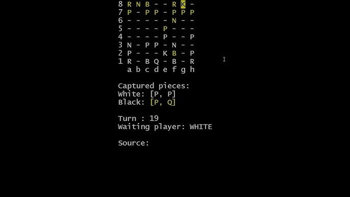
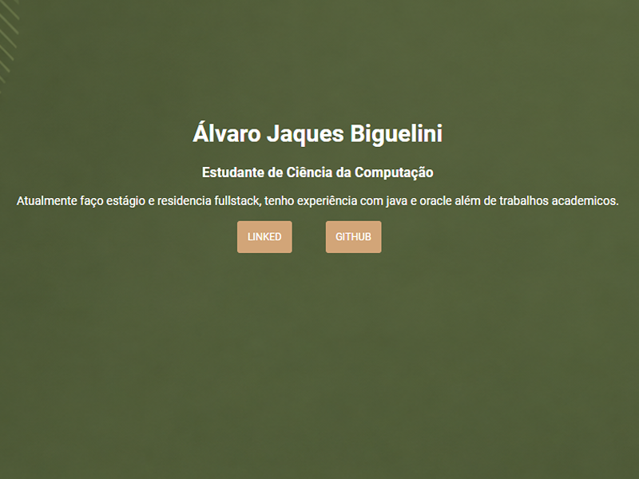
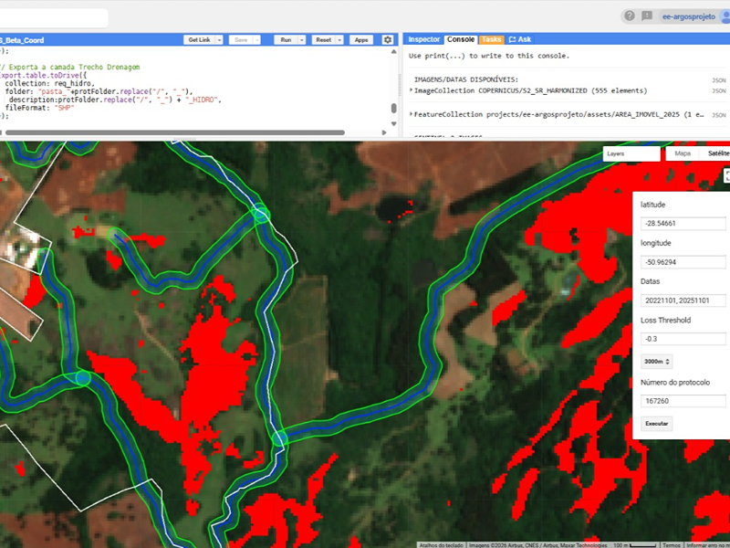

Álvaro Jaques Biguelini
Estudante de Ciência da Computação
Graduando em Ciência da Computação na Ulbra, unindo o desenvolvimento de software com a pesquisa acadêmica. Atualmente sou estagiário e residente Fullstack, com experiência prática em Java e Oracle. Tenho grande interesse na intersecção entre tecnologia e análise de dados, explorando áreas como Inteligência Artificial, algoritmos avançados e sistemas de informação geográfica (GIS)
tecnologias e Conhecimentos
Backend & Dados
Java, Python, SQL, Oracle
Frontend
HTML, CSS, JavaScript
Análise & Metodologias
Data Science, Inteligência Artificial, Metodologias Ágeis (Scrum), GIS (QGIS)

Xadrez
Este projeto é a implementação de um jogo de xadrez completo, projetado para rodar diretamente no terminal. Foi desenvolvido como um exercício prático para aplicar e aprofundar os conceitos de Programação Orientada a Objetos (POO) em Java. O sistema implementa toda a lógica do jogo, incluindo a movimentação de peças, regras especiais, e a lógica de xeque e xeque-mate, oferecendo uma experiência de jogo funcional via console.

Portfolio
Este projeto é um portfólio pessoal desenvolvido com HTML e CSS, criado para apresentar minha trajetória acadêmica, experiências e projetos na área de desenvolvimento de software. A página possui uma interface personalizada, seção de apresentação, links para LinkedIn e GitHub e cards destinados à exposição dos projetos desenvolvidos.

Detector de Golpes
Projeto desenvolvido em Java para o curso Fullstack 5.0 com o objetivo de analisar mensagens de texto e detectar possíveis tentativas de golpe/phishing utilizando regras de negócio e identificação de palavras-chave suspeitas.

Google Earth Engine como Ferramenta de Análise Geoespacial em Perícias de Crimes Ambientais
Este trabalho explora o potencial do Google Earth Engine (GEE) como ferramenta para perícias de crimes ambientais para detectar e dimensionar desmatamentos e conversão de campos de altitude, utilizando o índice NDVI..